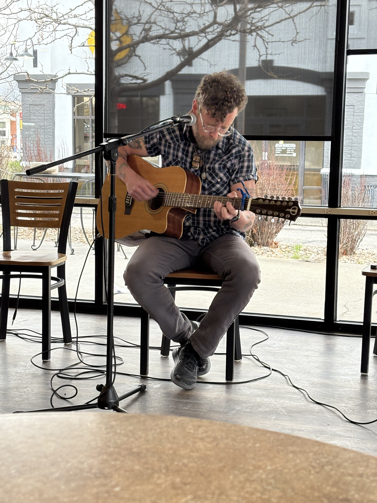
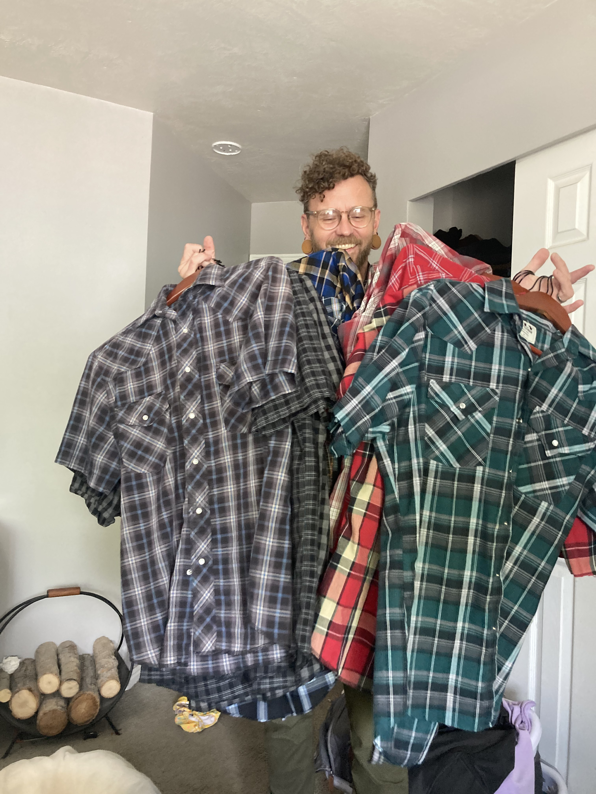

Open Mics
Most weeks you'll find Nick at a local open mic, running through a mix of covers and original songs.

Guitars & Gear
Blue Ibanez
His go-to for open mic sets — reliable, road-ready, and the guitar he reaches for most.
Teton 12-String
Brought out for songs that need a fuller, more layered sound — the extra strings add a shimmer you can't get from a standard six-string.
Handmade Vintage Classical
A one-of-a-kind instrument with real history in the wood — his pick for quieter, fingerpicked pieces.
The Plaid

It's become something of a trademark — Nick shows up to every gig, every open mic, and pretty much every day in plaid.
Flannel Open Mic Regular Singer-Songwriter